地政学
メディナはヒジャーズ内陸にあり、メッカ、ジッダ、紅海港湾、リヤド方面を結ぶ聖地交通の結節点です。宗教的中心性は巡礼管理、治安、外交、国家の正統性と結びつき、世界のムスリムの視線を集める都市です。今も続きます。

🇸🇦 サウジアラビア / ヒジャーズ / World City Atlas
預言者のモスクを中心に、ヒジュラの記憶、巡礼経済、ホテルと交通、宗教教育、デーツのオアシス、暑熱と水、静かな住宅地の日常が重なるイスラム世界の聖都。
都市の骨格
メディナは預言者のモスクを中心に、来訪者を受け止めるホテル街、大学と病院、デーツ畑の記憶、郊外住宅地、空港と高速鉄道が重なります。祈りの静けさと巨大な都市運営が同じ地図にあります。
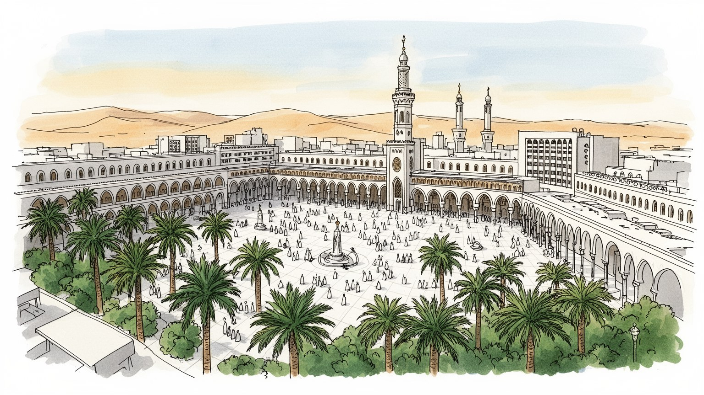
メディナはヒジャーズ内陸にあり、メッカ、ジッダ、紅海港湾、リヤド方面を結ぶ聖地交通の結節点です。宗教的中心性は巡礼管理、治安、外交、国家の正統性と結びつき、世界のムスリムの視線を集める都市です。今も続きます。
宿泊、飲食、小売、バス、鉄道、清掃、警備、医療、大学、行政が都市経済を支えます。季節波動の大きい仕事をサウジ市民と多国籍労働者が担い、暑熱下の現場労働も聖都の品位を日々保ちます。都市の信頼も支えます。
預言者のモスクを中心に、祈り、学問、慈善、家族の訪問、静かな礼節が都市の空気を形づくります。宗教は名所の背景ではなく、公共空間の声量、服装、時間割、商いの作法まで整える力です。街の作法も決めます。
来訪者は参詣と学びを目的に滞在し、住民は学校、病院、買い物、家族訪問、結婚式、通勤を続けています。観光は娯楽より祈りに近く、暑さ、礼拝時間、混雑、家族移動への配慮が街を読む鍵です。静けさも魅力です。
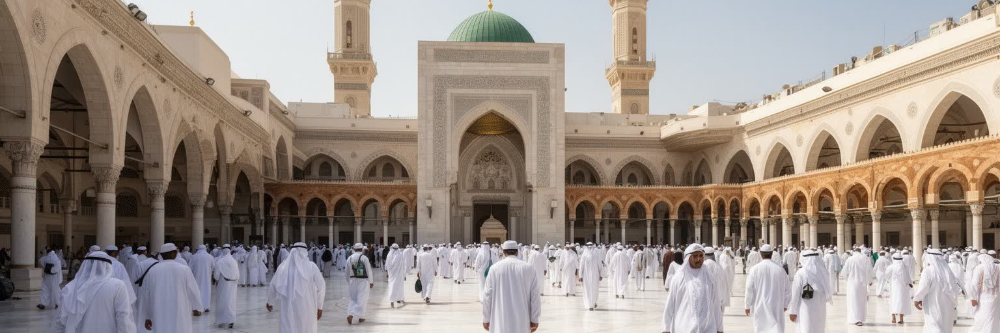
メディナの都市構造は、預言者のモスクを中心に読む必要があります。ここはイスラム世界で最も敬意を払われる場所の一つで、来訪者は観光地を消費するというより、祈り、挨拶し、学び、静かに滞在するために集まります。モスクの周囲には広場、ホテル、商業施設、歩行者動線、駐車場、バス乗降場が整えられ、礼拝時間には人の流れが一斉に変わります。商店の営業、交通規制、清掃、警備、医療対応も祈りのリズムに合わせて組み替えられます。高層ホテルの足元では、家族連れ、高齢の巡礼者、車椅子利用者、多様な言語を話す人びとが同じ方向へ歩きます。聖域に近い土地の価値は高く、再開発は利便性を増す一方で、古い街路や小さな宿の記憶を薄めることもあります。中心部は宗教的尊厳と巨大な都市運営が重なる場所であり、静けさを守る努力と大量の来訪を受け止める実務が同時に求められます。床を磨く清掃員、迷う人を案内する職員、祈りを待つ家族の姿は、この中心が建築物だけで成り立たないことを示しています。さらに、聖域の周辺では写真、会話、移動、買い物にも節度が求められ、都市の公共性は一般的な繁華街とは違う緊張を帯びます。便利さを増すほど、場所の意味を損なわない設計と言葉遣いが必要になります。広場の明るさや床の冷たさ、入口の案内、礼拝後の出口の流れまで、細部が人の安心を左右します。聖域を支える都市計画は、信仰への敬意を日常の動線へ翻訳する仕事でもあります。
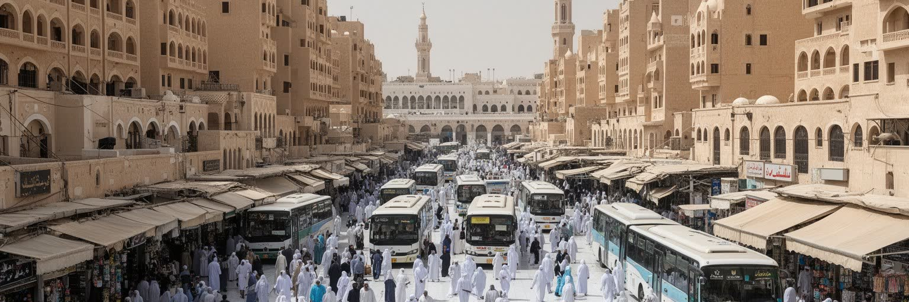
メディナの経済は、巡礼と宗教訪問を支える産業に大きく依存しています。中心部のホテル、短期滞在用の住居、飲食店、香水店、デーツ店、衣料品店、旅行会社、通信販売、土産物店は、世界各地からの来訪者の滞在に合わせて動きます。ハッジの時期だけでなく、ウムラ、ラマダン、学校休暇にも需要が変動し、雇用と価格に季節性が生まれます。ホテルの客室稼働率、バスの配車、清掃、ランドリー、食品配送、医療通訳は、信仰の旅を円滑にする見えにくい基盤です。多くの労働はサービス職や移民労働にも支えられ、過酷な暑さの中で働く人も多いです。巡礼経済はサウジアラビアの脱石油化戦略とも結びつき、宗教観光の受け入れ拡大、空港と鉄道の整備、ホテル投資を促しています。ただし、聖地の経済化には慎重さが必要です。来訪者の便宜を高めることと、敬意ある空間を守ることの均衡が、メディナの商業の質を決めます。客数だけでなく、滞在者、住民、労働者が過度な緊張なく同じ都市を使えるかが問われます。小さな店の売上、家賃の上昇、中心部で働く人の通勤時間も経済の一部です。信仰の旅を支える市場であるほど、価格や接客の公平さ、弱い立場の労働者への配慮が都市の信頼に直結します。巡礼者が持ち帰る品物は、家族への贈り物であり、店員との短い会話の記憶でもあります。消費の量ではなく、滞在が穏やかに終わることが経済の価値を高めます。
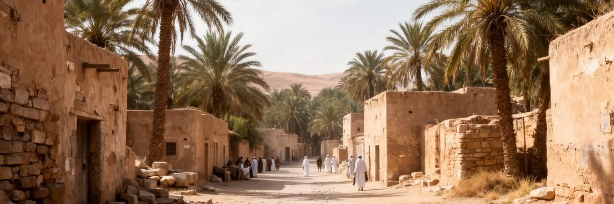
メディナは、イスラム初期の共同体形成を語るうえで特別な重みを持ちます。預言者ムハンマドのヒジュラは、単なる移動ではなく、迫害を逃れた人びとが新しい政治的、宗教的な共同体を築く転換点として記憶されます。都市の旧名ヤスリブ、アンサールとムハージルーンの関係、共同体間の契約、戦いと和解の歴史は、メディナを一つの聖地以上の場所にしています。クバー・モスク、ウフド山周辺、バキ墓地の近く、古い井戸やワジは、信仰の物語を地形に結びつける訪問地です。これらの場所を巡る時には、写真を撮る対象としてではなく、移住、支援、忍耐、共同体の責任を考える姿勢が求められます。都市開発が進むほど、歴史の場所は交通、保存、案内、混雑管理の間で難しい判断を迫られます。過度な演出は聖地の品位を損ない、説明が少なすぎると来訪者は意味を十分に理解できません。メディナの記憶は建物の古さだけで測れるものではなく、地形、語り、礼拝、墓地への敬意、家族や教師から伝わる物語によって保たれています。だから、訪問地を増やすことだけが理解ではありません。歩く順序、立ち止まる時間、声を抑える態度、案内人の言葉が、場所の意味を深めます。歴史の記憶は点ではなく、街全体に広がる倫理として続いています。地形の一部が物語を帯びる瞬間を尊重すると、メディナは遠い過去の舞台ではなく、共同体の責任を考え続ける現在の都市として見えてきます。
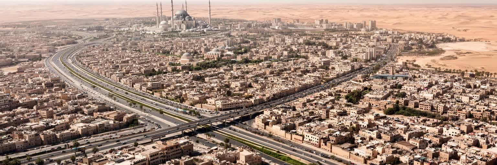
聖域周辺のメディナは、来訪者の増加に対応するため急速な都市更新を経験してきました。ホテル、広場、道路、駐車場、歩行者空間、商業施設が拡張され、中心部の景観は大きく変わりました。再開発は混雑を減らし、医療、安全、バリアフリー、清掃の水準を高める効果を持つが、古い住宅地、小規模商店、歴史的な路地、地域の記憶を失わせる危険もあります。聖地の近くでは、土地利用の判断が宗教的感情、国家の威信、投資、観光収入、住民の生活を同時に動かします。外縁部では新しい住宅地、大学、病院、幹線道路が乾いた台地へ伸び、中心部の聖性とは別の速度で日常圏が広がります。都市の拡張は高層化だけではなく、日陰のある歩行路、暑さを避ける待機場所、女性や高齢者が移動しやすい施設、礼拝後の混雑を分散する広場を必要とします。歴史を尊重する都市更新は、古い建物を単に残すことではありません。人びとがどの道を歩き、どの店で休み、どの眺めに記憶を重ねたかを理解することでもあります。新しい建物が整うほど都市は清潔で分かりやすくなりますが、場所の厚みは案内板だけでは残せありません。公共空間の質は広さではなく、迷わない動線、座れる余白、静かに待てる環境で決まります。郊外に住む人にとっては、中心部の整備だけでなく、学校や病院へ向かう道路、公共交通、買い物の近さも重要です。聖域の都市計画は、来訪者の動線と住民の生活圏を同時に扱う必要があります。
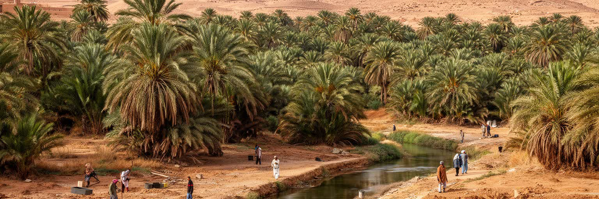
メディナは聖域の都市であると同時に、歴史的には水源とナツメヤシに支えられたオアシス都市でもありました。周囲には黒い溶岩台地、乾いたワジ、低い山並みが広がり、わずかな水と農地が定住を可能にしました。デーツは土産物としてよく見えますが、単なる商品ではありません。農家の労働、灌漑、品種、収穫期、家族の贈答、ラマダンの食卓、来訪者が持ち帰る記憶をつなぐ作物です。都市が拡大するほど、農地は住宅地、道路、商業施設へ変わり、オアシスの景観は見えにくくなります。水資源は現代では海水淡水化、送水、貯水、下水処理、節水に依存し、ホテルの増加や人口増が需要を押し上げます。乾燥地では緑地が貴重な休息を与える一方、維持には水が必要で、都市景観と資源管理のバランスが問われます。デーツ畑を読むことは、メディナが信仰だけでなく、土地の制約と農の知恵の上に築かれた都市だと知ることでもあります。店先の箱詰めされたデーツの背後には、砂漠の水、季節の労働、家族への贈り物、巡礼後の記憶が重なっています。市場で交わされる品種の名前や産地の説明は、土地の細かな知識を今に伝えます。オアシスの記憶が薄れるほど、聖都の歴史は建築だけに偏ってしまいます。農の風景を残すことも都市の文化を守る一部です。都市の外縁に残る緑や古い水路を意識すると、メディナの静けさが砂漠の厳しさと隣り合ってきたことが分かります。
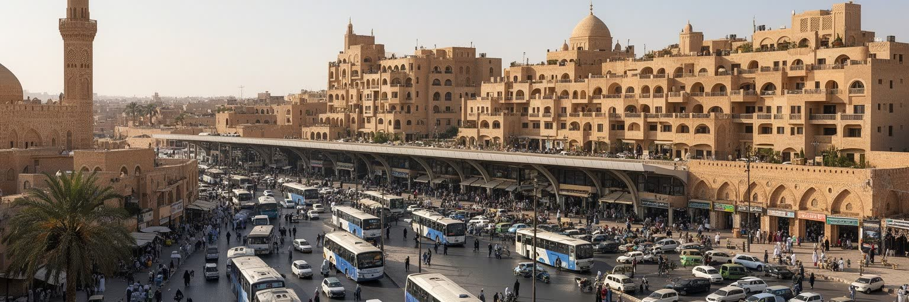
メディナの移動は、徒歩、ホテル送迎バス、タクシー、配車アプリ、長距離バス、空港、ハラマイン高速鉄道によって成り立ちます。鉄道はメッカとジッダ方面への移動を短縮し、巡礼者の負担を軽くする重要な基盤になりました。空港は国際便と国内便を受け入れ、到着した人びとは宿泊施設、聖域、メッカ方面、郊外の訪問地へ分散します。中心部では礼拝時間の前後に歩行者が急増し、道路交通は規制、一方通行、乗降場所の調整を必要とします。高齢者や体調のすぐれない来訪者も多いため、短い距離の移動でも日陰、休憩、段差の少なさ、案内の分かりやすさが重要になります。ホテルは眠る場所にとどまらず、食事、家族の集合、通訳、医療相談、ツアー手配、洗濯、礼拝時間の調整を支える都市機能でもあります。自家用車に依存する住民の生活と、大量の巡礼者を運ぶ公共交通は時に緊張します。交通の質は、観光の快適さだけでなく、礼拝への参加、病院への到達、働く人の通勤にも関わります。聖都の移動は、速度と配慮を同時に測る都市の試験です。到着直後に迷わない案内、混雑時に家族が離れない待機場所、体調不良者を早く見つける仕組みは、見た目以上に重要な公共サービスです。移動の不安を減らすことが、祈りの時間を落ち着かせます。駅や乗降場は都市の第一印象を決めるため、言語、段差、暑さ、荷物の扱いまで含めた設計が欠かせません。
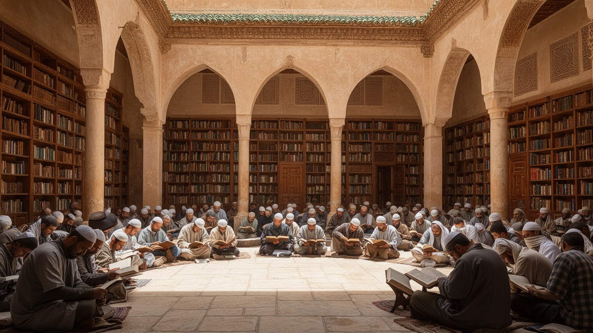
メディナは祈りの都市であると同時に、学問の都市でもあります。預言者のモスク周辺では古くから宗教知識の伝達が行われ、現代にはイスラーム大学、タイバ大学、研究機関、図書館、宗教教育の場が集まります。学生はサウジ国内だけでなく、アジア、アフリカ、ヨーロッパ、アラブ世界から来て、多言語の学習環境をつきます。ここで学ばれる内容は、クルアーン、ハディース、法学、アラビア語だけに限らず、医学、工学、教育、経営など都市の実務を支える分野にも広がります。宗教都市としての品位は、知識をどう扱うか、異なる背景の来訪者にどう接するか、公共空間でどのような礼節を保つかにも表れます。学問は街の静けさを深める一方、若い学生の生活、寮、書店、カフェ、交通、就職という日常も生みます。メディナの文化を名所だけで見ると、知識を求めて暮らす人びとの時間を見落とします。祈り、暗誦、講義、研究、家族への送金、卒業後の進路が一つの都市で重なり、聖都の国際性を支えています。知識が共同体を支える責任として扱われる時、都市の宗教性は深みを増します。教室や図書館で交わされる静かな議論は、広場の祈りとは別の方法で信仰を支えます。学ぶために滞在する人の生活も、メディナの国際性を日常のものにしています。学生の寮、書店、通学路、卒業後の進路まで見ると、聖都は記憶を守るだけでなく、知識を更新し続ける都市として立ち上がります。
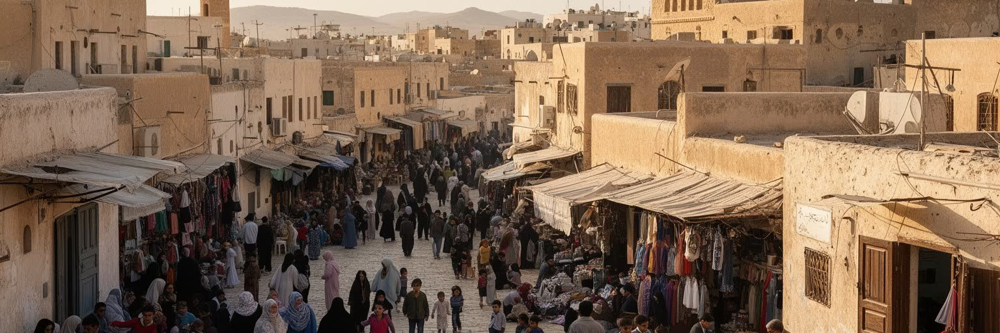
メディナは世界の来訪者が集まる聖都である前に、家族が暮らす都市です。中心部から離れると、住宅街、学校、病院、スーパー、デーツ畑に近い地区、工房、小さな食堂、車社会に合わせた幹線道路が広がります。住民の生活は礼拝時間、学校の送迎、家族訪問、買い物、結婚式、病院通い、夏の暑さへの備えによって形づくられます。巡礼者の多い季節には交通や物価、ホテル周辺の混雑が日常に影響し、住民は聖都ならではの誇りと負担を同時に抱えます。サウジ社会の変化により、女性の就業、若者の教育、娯楽施設、カフェ文化、オンライン配送も広がりつつありますが、都市の中心的な気分はなお礼節と家族を重んじます。住宅地ではプライバシーを守る壁や門、日差しを避ける建築、車での移動が目立ち、歩行者空間の質は地区によって差があります。メディナの日常を理解するには、聖域の壮大さだけでなく、暑い夕方に買い物へ出る家族、学校帰りの学生、病院で働く人、清掃や警備に向かう労働者の時間を同じ地図に置く必要があります。特別な聖都も、生活を続ける実際的な都市です。住宅費、通勤、学校選び、医療への近さ、暑い日に歩ける道は、ほかの都市と同じように暮らしの質を左右します。聖地の名声の背後にある普通の課題を見て初めて、住民の都市としてのメディナが見えてきます。日常の静けさは自然に生まれるのではなく、家族、近所、交通、商いの調整によって保たれています。
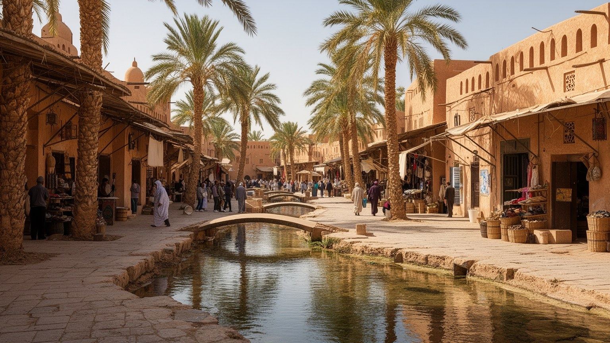
メディナの気候は乾燥し、夏の暑さは厳しいです。来訪者は礼拝や訪問地巡りに集中しがちですが、熱中症、脱水、日差し、長距離歩行は現実的なリスクです。都市は日陰、冷房空間、給水、救急医療、清掃、夜間の活動時間を組み合わせて暑熱に対応します。水資源は歴史的にオアシスと井戸に支えられてきたが、現代の大都市では海水淡水化、送水、貯水、節水、下水処理が不可欠です。ホテルの増加、人口増、来訪者の季節集中は、水と電力の需要を押し上げます。短時間の豪雨は少なくても強い影響を及ぼすことがあり、ワジや道路排水、地下施設の安全も重要になります。気候変動によって猛暑の頻度が高まれば、高齢の巡礼者、屋外労働者、低所得の住民が最も影響を受けます。メディナの環境政策は、快適な観光整備ではなく、信仰の旅と日常生活を守る基礎インフラとして考える必要があります。冷房に頼る都市は電力需要も大きく、停電や価格上昇に弱くなります。日陰を増やし、水を無駄にせず、暑さの中で働く人を守る設計が、これからの聖都の質を左右します。涼しさは贅沢ではなく、祈りと移動を続ける条件です。水飲み場の場所、待機列の日陰、屋外労働の休憩、夜間交通の安全は、どれも都市の尊厳に関わります。暑さへの備えが弱いと、敬意ある滞在も住民の日常も保ちにくくなります。気候に強い聖都とは、設備が大きい都市ではなく、弱い人が暑さの中で取り残されない都市です。
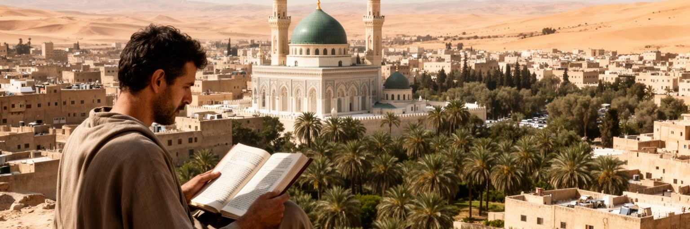
メディナを世界都市として読む価値は、金融規模や人口だけでは測れません。ここには預言者のモスク、ヒジュラの記憶、ウフドやクバーの訪問地、デーツのオアシス、宗教教育、ホテル産業、空港と高速鉄道、移民労働、暑熱と水の問題、住民の静かな日常が重なっています。国際性は娯楽や金融ではなく、祈りを中心に集まる多国籍の来訪によって生まれます。広場ではアラビア語だけでなく、ウルドゥー語、インドネシア語、トルコ語、英語、ハウサ語、マレー語、ベンガル語などが交わり、世界のムスリム社会の広さと所得差が同じ空間に現れます。一方で、聖地の品位は壮大な建築だけでは保てありません。清掃、案内、交通、医療、宿泊、給水、労働条件、住民の暮らしが整って初めて、来訪者は落ち着いて祈ることができます。メディナの核心は、特別な宗教的重みと普通の都市問題が分かちがたく結びついている点にあります。敬意ある滞在を支えるには、歴史の記憶を急いで消費せず、働く人と住む人の時間まで見る必要があります。聖都を生活都市として読む視点が、この都市の尊厳と現代性を同時に見せてくれます。大きな広場やホテルの規模だけを見れば、都市は整然として見えます。しかし、その秩序は日々の案内、掃除、配車、医療、家族の配慮、暑さへの備えで保たれます。見えにくい支えまで読む時、メディナは祈りの場所であると同時に、現代都市の課題を映す場所になります。